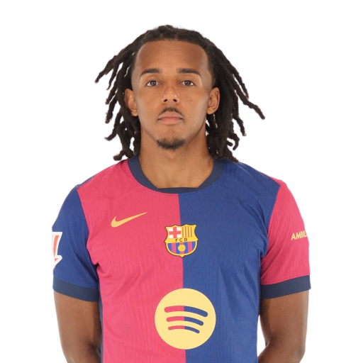
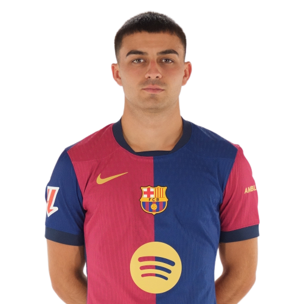

Dettagli Squadra
Allenatore:
Hansi Flick
Presidente:
Joan Laporta
Fondazione:
1899
Stadio:
Camp Nou
Portieri
1 Marc-André ter Stegen
13 Iñaki Peña
Difensori
2 Pau Cubarsí (DC)
3 Alejandro Balde (TS)
4 Ronald Araujo (DC)
5 Iñigo Martínez (DC)
15 Andreas Christensen (DC)
23 Jules Koundé (TD)
24 Eric García (DC)
32 Héctor Fort (TD)
Centrocampisti
6 Gavi (CC)
8 Pedri (CC)
14 Pablo Torre (CC)
16 Fermín López (CC)
17 Marc Casadó (CC)
20 Dani Olmo (TQ)
21 Frenkie de Jong (CC)
28 Marc Bernal (CC)
Attaccanti
7 Ferran Torres (AS)
9 Robert Lewandowski (AT)
10 Ansu Fati (AS)
11 Raphinha (AD)
18 Pau Víctor (AT)
19 Lamine Yamal (AD)